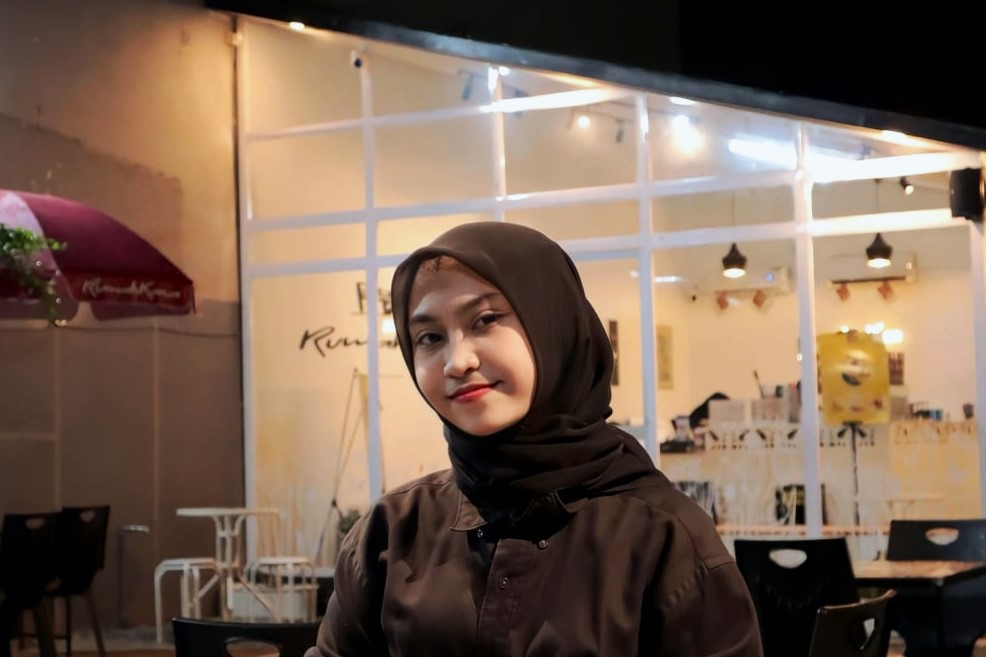

DIAN PUSPITA SARI
"Di antara baris-baris kode, kita menari dengan logika dan menciptakan simfoni digital. Pemrogram web, penulis masa depan di dunia maya, menggambar garis-garis kreatif di dalam tautan HTML dan CSS. Mereka adalah arsitek modern, merancang gedung-gedung virtual yang tak terbatas, mengekspresikan kreativitas mereka melalui sintaks-sintaks yang menghidupkan ide."
Learn More